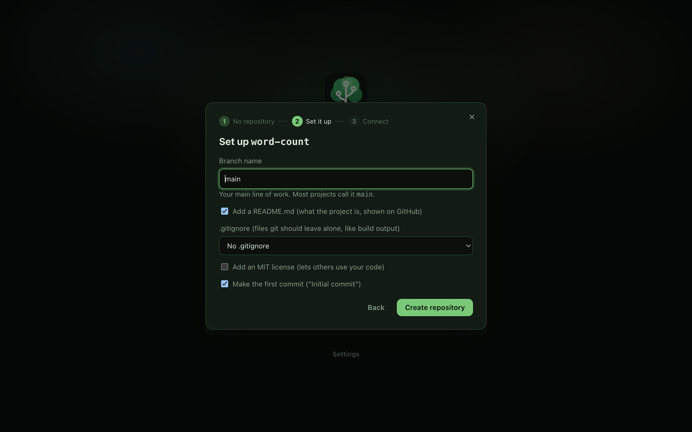
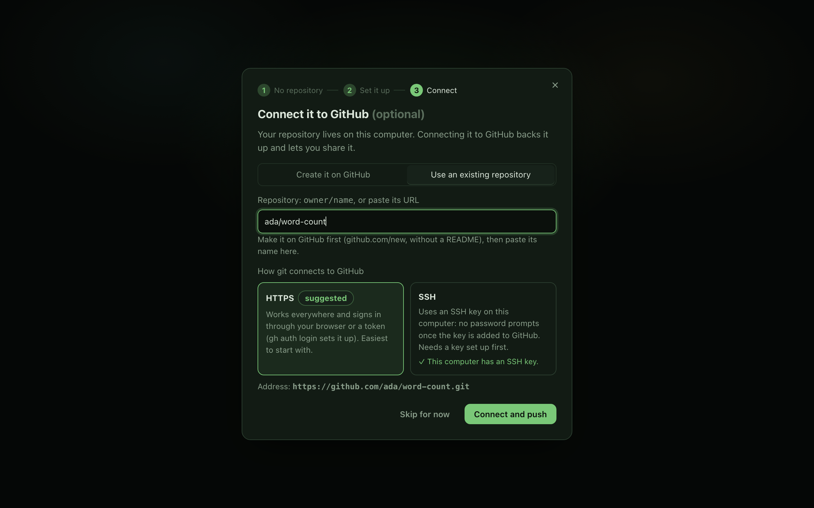

Start a new repository
Turn a folder into a git repository, then put it on GitHub over HTTPS or SSH.
A repository is a folder that git keeps the history of. Every project starts by turning a folder into one, and most people then put a copy on GitHub so it is backed up and easy to share.
canopy desktop does both in one short setup: it creates the repository, adds the starter files you choose, makes the first commit, and can create the GitHub repository and push to it. Each step can be skipped.
In canopy desktop#
- On the welcome screen, click Start a new one… and pick a folder. An empty folder or a folder full of files both work. If you use Open a repository… (⌘O, Ctrl+O on Windows and Linux) on a folder that is not a repository yet, the same setup starts.
- Step 1 says "There's no git repository here yet" and shows the folder. Files already in it are left as they are. Click Create a repository here, or Choose another folder.
- Step 2, "Set up", asks for:
- Branch name: your git setting for new repositories, or
mainif you have none. - Add a README.md: a page that says what the project is. GitHub shows it on the project's front page. Ticked by default.
- .gitignore: files git should leave alone, like build output. Choose No .gitignore, Rust, Node / JavaScript, Python, or macOS only (.DS_Store).
- Add an MIT license: lets others use your code. Not ticked by default.
- Make the first commit ("Initial commit"): ticked by default.
- Branch name: your git setting for new repositories, or
- Step 3, "Connect it to GitHub (optional)", has two tabs. Create it on GitHub only appears when you are signed in with the GitHub CLI. Give it a "Name on GitHub", choose Private or Public, and click Create and push. The other tab, Use an existing repository, is described next.
- For an existing GitHub repository, make it on github.com first, without a README. Then type Repository as
owner/nameor paste its URL, choose how git connects (HTTPS or SSH, see below), check the "Address" line and click Connect and push. - To do this later, click Skip for now. The last screen says your folder is ready, lists what ran, and has an Open it button.



What git runs#
The last screen prints these lines so you can repeat them by hand next time. Files such as the README are only written if they are missing, and the commit is skipped when the folder is empty.
$ git init -b main $ git add --all $ git commit -m "Initial commit" $ gh repo create my-project --private --source=. --remote origin --push
If you connect to an existing repository instead of creating one, the last line becomes:
$ git remote add origin <address> $ git push --progress --set-upstream origin main
With an older git that lacks init -b, canopy runs git init and then names the branch. If a remote called origin already exists, its address is updated instead of added, so trying again is safe. --push and the push only happen when there is a commit.
HTTPS or SSH#
Both reach the same GitHub repository. They differ in how git proves who you are.
| HTTPS | SSH | |
|---|---|---|
| Address looks like | https://github.com/owner/name.git | git@github.com:owner/name.git |
| Sign-in | Through the GitHub CLI or your computer's saved credentials. | A key on your computer that GitHub knows. |
| Best when | You have signed in with gh auth login. | You already have an SSH key set up. |
If something goes wrong#
- "git doesn't know your name and email yet, so it can't commit." Set them once in a terminal, then create the repository again:
git config --global user.name "Your Name"andgit config --global user.email "you@example.com". - "Added the remote, but the push didn't go through." The GitHub repository probably does not exist yet. Create it (or use the Create it on GitHub tab), then push. Nothing is lost: your commit is safe on your computer.
- "That doesn't look like a repository." Type
owner/nameor paste the full URL. - There is no "Create it on GitHub" tab. You are not signed in with the GitHub CLI. Run
gh auth loginin a terminal and start again, or use the other tab. - The push is refused or asks for a password. Try the other connection type, HTTPS or SSH. See Sync with a remote.
- The first commit has the wrong message. See Fix your last commit.
- A file you did not want was committed. See Ignore files with .gitignore.